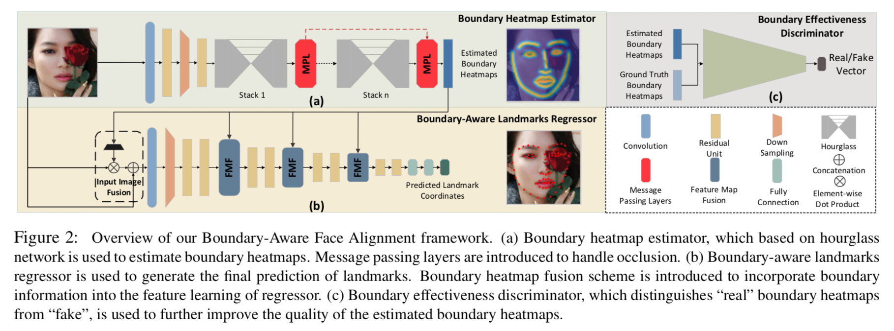
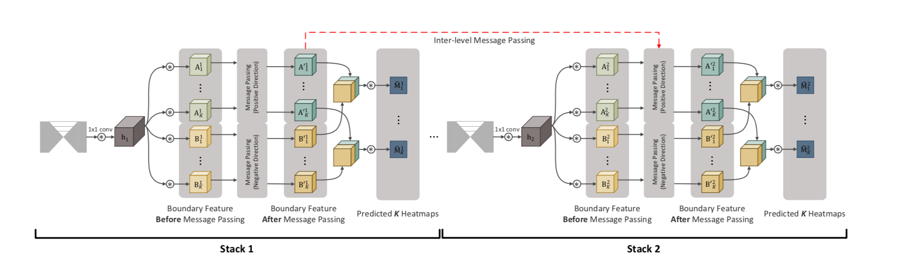
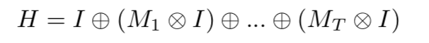
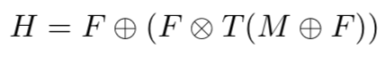
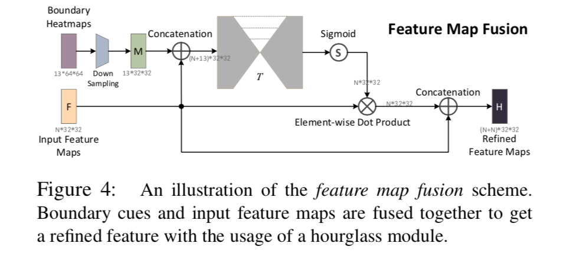
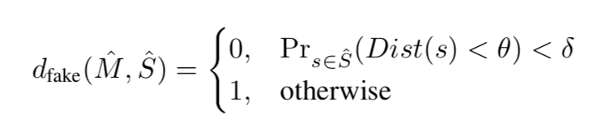
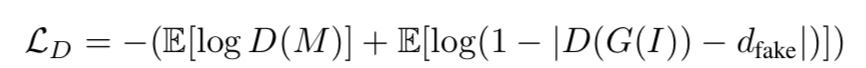
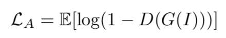

Look at Boundary: A Boundary-Aware Face Alignment Algorithm
URL:https://wywu.github.io/projects/LAB/LAB.html

本论文提出了一种基于边界信息的landmark定位方法，通过回归landmark 构成的boundary可以一定程度上解决遮挡等一些问题，boundary的一般性也得以融合多个不同的landmark标注数据集进行一同训练。此外论文也贡献了包含1w张图片的数据集WFLW。
论文所提的整个方法主要分成三个部分：
- Boundary heatmap estimator：这一部分是一个Hourglass结构，用来初步生成boundary的heatmap，需要说明的是，为了增强模型在有遮挡情况下的表现，论文引入了message passing layer来传递不同boundary之间的信息和同一个boundary不同stack之间的信息。这一部分的细节在这篇论文的补充材料里面写的比较清楚，不管是inter-level还是intra-level信息的传递都是不同feature 之间的特征融合（conv + entry-wise sum ），intra-level是不同的stack之间，inter-level是k个（k代表boundary的个数）boundary heatmap之间。
 - Boundary-aware landmarks regressor ：该模块主要用来回归heatmap：
a. Boundary由区域的landmark插值生成
b. Input image fusion： I为输入图片，Mi为第i个heatmap，乘号为element-wise dot product，加号为channel-wise concatenation

c. Feature map fusion：F为feature map M为heatmap，其他和上面类似

 - Boundary effectiveness discriminator：这一部分主要引入对抗学习的思想，第一部分Boundary heatmap estimator生成的heatmap有效性被定义为：

M为生成的heatmap，S为对应的landmark集合，Dist为gt对应的distance matric map ，θ 和δ 分别是距离和概率的阈值，整个公式需要保证比较好的heatmap对应的landmark要尽可能多的离gt近
Discriminator的Loss：

Adversarial Loss：
 - 此外论文也提供了一个WFLW数据集，包含1w张图片
和目前不少的landmark localization方法类似，论文所提方法也是基于区域的想法去解决定位的问题，只是通过一些插值的操作做了比较细致的处理，感觉对于遮挡等一些问题会比较有帮助。
本博客所有文章除特别声明外，均采用 CC BY-NC-SA 4.0 许可协议。转载请注明来自 Out of Memory！